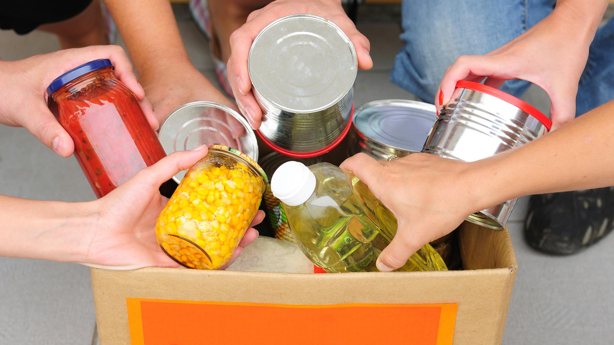

encargado del papel de desarrollador frot-end, se encargara del diseño de la pagina asi como insertar las imagenes y la informacion recopilada de nuestro compañero
Donación de Alimentos
La donación de alimentos requiere un proceso ya que estamos hablando de alimentos que caducan y nuestra intención es poder alimentar a los más desafortunados y poder darles alimento.
Lo principal a tomar en cuenta a la hora de hacer una donación de alimentos es verificar el tiempo de caducidad de los alimentos para donar para acto seguido pasar al segundo paso.
Como deseamos que los alimentos sean duraderos para alimentar a las personas más desafortunadas podemos donar alimentos no enlatados pero lo más recomendable es que sean alimentos enlatados por que la comida enlatada se conserva un tiempo más prolongado lo que les permite tener alimentos por un largo periodo de tiempo.

Donación de ropa para el invierno
Contamos con centro de acopio para poder recibir las donaciones de ropa para el invierno. Cualquier tipo de prenda que pueda ayudar a las personas de escasos recursos puede ser donada para cubrir a los más necesitados y poder afrontar los frentes fríos.
Por medio de la aplicación se selecciona la opción de donación, ahí aparecerá el tipo de donación, se selecciona la ropa para el invierno nos mostrara los centros de acopio donde podremos ir a entregar nuestra ropa para posteriormente entregarla a las personas de escasos recursos.
Se hará la recolección durante un lapso de días y posteriormente se cerrara para poder iniciar el otro proceso de entrega de ropa para el invierno se estará entregando la ropa a cada persona marcada en la aplicación.
Con eso finalizamos lo que es el proceso de donación de ropa de frio y podemos abrigar a las personas más desafortunadas!!

Imagen de persona de escasos recursos que pudimos ayudar